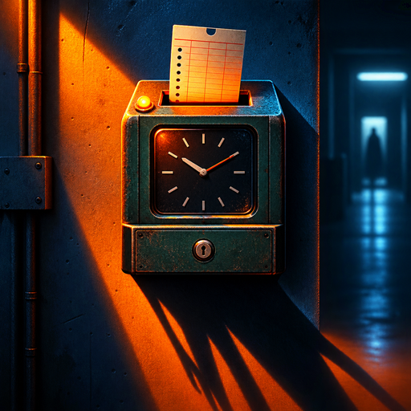

Wrong Shift
Six feeds, one building, one night. Name what changed, or log all clear.
Six camera feeds. One building. One night. Every hour the building is slightly not the building it was. Wrong Shift is a security camera game about noticing. The feeds refresh on the hour and something is different in zero or one of them. Tap the thing and name it, or press All clear. About eight sweeps, tightening, and the whole night runs two to three minutes. Reporting nothing is also an answer: logging something that did not change costs you more than missing something that did. You find out at dawn, not before. An anomaly is a wrong ordinary thing. Nothing jumps out at you and nothing chases you.
Get it on Google PlayScreenshots //
Dev log //
- Cute Pass: wrongshift
- Ads only: remove the in-app purchase
- Slate finish: all 15 games now build a signed release bundle
- Live AdMob and Sentry: invert the guards that assumed placeholders
The 4 most recent changes worth reading, out of 14 commits.
Every line above is a real commit from this app's repository, on the date it was made. Build chores, merges and internal housekeeping are filtered out.